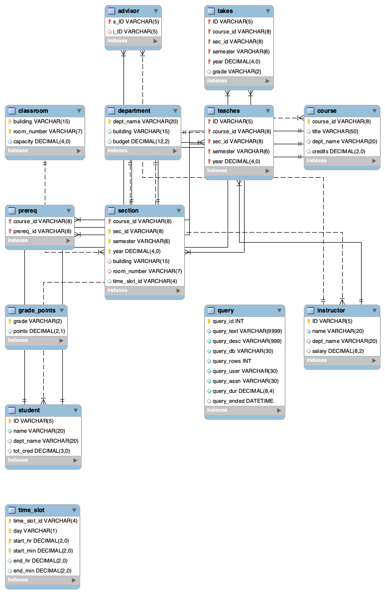
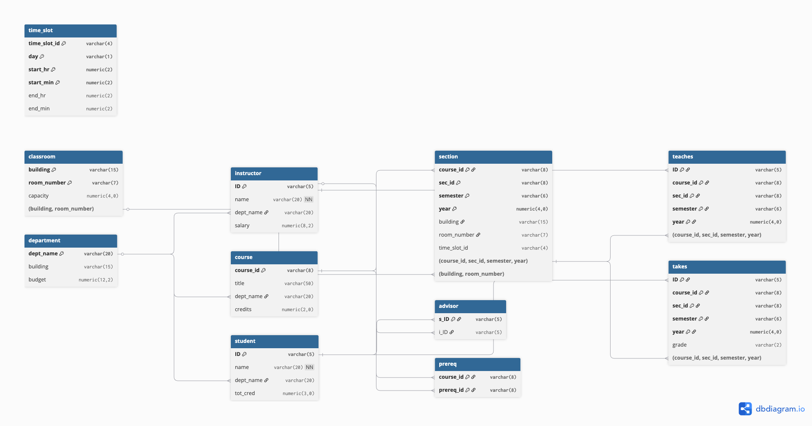

Name: Zohaib Cheema Date: January 2026
Screenshot/Export of ERD from MySQL Workbench

Description:
I used the Database → Reverse Engineer feature in MySQL Workbench to create the ERD. I selected Local instance and chose the university schema, then included all tables and excluded views. I enabled the "place objects on diagram" option so it would automatically arrange everything. The ERD shows 12 tables from the university database (advisor, takes, classroom, department, prereq, section, grade_points, student, time_slot, teaches, course, instructor) plus the query table from the meta database. It shows all the attributes, primary keys, and foreign key relationships using crow's foot notation.
Screenshot/Export of ERD from Second Tool (dbdiagram.io)

Description:
I created the ERD using dbdiagram.io. I imported the database schema and used the automatic layout feature to arrange the tables. The ERD shows 11 tables from the university database (time_slot, classroom, department, instructor, course, student, section, advisor, prereq, teaches, takes). It shows all the columns, data types, and relationships between tables. The relationships are shown as lines with arrows that connect foreign key columns to primary key columns.
| 1. Entities/tables as boxes | Tables are represented as rectangular boxes in the diagram | Each table appears as a rectangular box with a light blue background and table name in a darker blue header. 12 tables are shown: advisor, takes, classroom, department, prereq, section, grade_points, student, time_slot, teaches, course, instructor, and query (from meta database). | Tables are represented as rectangular boxes with blue headers containing the table name. 11 university tables are shown: time_slot, classroom, department, instructor, course, student, section, advisor, prereq, teaches, takes. Columns are listed below each table name. |
| 2. Primary key visibility | Primary keys are clearly marked/identified in the table representation | Primary keys are shown with a yellow key icon (↑) next to the column name. For example, student.ID, instructor.ID, course.course_id have the key icon. Composite PKs like section(course_id, sec_id, semester, year) show the key icon on all PK columns. Regular attributes marked with diamond icon (◇). | Primary keys are indicated by being part of the composite primary key notation shown at the bottom of each table box (e.g., "Primary Key: (course_id, sec_id, semester, year)"). Single-column PKs like ID, course_id, dept_name are clearly marked as Primary Key in the notation. |
| 3. Foreign key relationships drawn only when FK constraints exist | Relationship lines appear only between tables that have actual foreign key constraints in the database | Relationship lines connect tables that have FK constraints: student↔advisor↔instructor, takes↔student, takes↔section, takes↔grade_points (dashed line), section↔course, section↔classroom, teaches↔instructor, teaches↔section, prereq↔course (self-referential), course↔department, instructor↔department, student↔department. time_slot appears isolated with no relationship line to section, indicating section.time_slot_id doesn't have an FK constraint. | FK relationships shown as lines with arrows connecting foreign key columns to primary key columns. Relationships include: department referenced by instructor/course/student, classroom referenced by section, course referenced by section/prereq, instructor referenced by advisor/teaches, student referenced by advisor/takes, section referenced by teaches/takes. time_slot shows no relationship line to section. |
| 4. Cardinality display (1, many) | The diagram shows whether relationships are one-to-one, one-to-many, or many-to-many | Uses crow's foot notation: many side shows crow's foot (three pronged), one side shows single vertical bar. Examples: student(one) ↔ (many)takes, instructor(one) ↔ (many)teaches, course(one) ↔ (many)section, student(one) ↔ (one)advisor ↔ (one)instructor, department(one) ↔ (many)course/instructor/student. | Cardinality is shown through the direction of arrows and the relationship structure. One-to-many relationships are clear: department→instructor/course/student, instructor→teaches, student→takes, course→section, section→teaches/takes. One-to-one relationships shown for advisor linking student and instructor. |
| 5. Relationship notation style | The visual style used to represent relationships (crow's foot vs classic/diamond notation) | Uses crow's foot notation (Martin/Chen style). Relationship lines connect directly between tables with crow's feet on the many side and single bar on the one side. No diamond shapes are used. One relationship (takes to grade_points) uses a dashed line. | Uses line notation with arrows. Lines connect tables directly with arrows pointing from foreign key to primary key. No diamond shapes or crow's foot symbols, but relationship direction is clear from arrows. |
| 6. Optional vs mandatory participation | Indicates whether participation in a relationship is required (mandatory) or optional | The ERD shows relationship cardinality but does not explicitly show optional vs mandatory participation through circles or "0..1" notation. All relationships appear as solid lines connecting the tables (except takes→grade_points which uses a dashed line). | The tool shows foreign keys as part of the column definitions (marked as Foreign Key) but does not explicitly indicate optional vs mandatory participation through additional notation. All relationships appear as direct line connections. |
| 7. Composite primary keys | Shows when a primary key consists of multiple columns (e.g., section, takes, teaches tables) | Composite PKs clearly shown with key icon on each PK column: section has PK (course_id, sec_id, semester, year), takes has PK (ID, course_id, sec_id, semester, year), teaches has PK (ID, course_id, sec_id, semester, year), advisor has PK (s_ID) only, prereq has PK (course_id, prereq_id), classroom has PK (building, room_number), time_slot has PK (time_slot_id, day, start_hr, start_min). | Composite PKs displayed with notation at bottom of table: section Primary Key (course_id, sec_id, semester, year), takes Primary Key (ID, course_id, sec_id, semester, year), teaches Primary Key (ID, course_id, sec_id, semester, year), prereq Primary Key (course_id, prereq_id), classroom Primary Key (building, room_number). advisor shows only s_ID as Primary Key. |
| 8. Data types / attribute metadata shown in diagram | Column data types (VARCHAR, INT, etc.) and other metadata are visible in the table boxes | Each column shows data type: ID VARCHAR(5), name VARCHAR(20), dept_name VARCHAR(20), tot_cred DECIMAL(3,0), salary DECIMAL(8,2), credits DECIMAL(2,0), etc. NOT NULL constraints shown (e.g., instructor.name, student.name). Regular attributes marked with diamond icon (◇). | Data types shown for each column: ID varchar(5), name varchar(20) NN (Not Null), dept_name varchar(20), tot_cred numeric(3,0), salary numeric(8,2), credits numeric(2,0), etc. Column names, data types, and NOT NULL constraints (marked as NN) are visible. |
| 9. Layout/editability | Ability to drag and rearrange tables for better readability | Tables are arranged automatically by Workbench's layout algorithm. Tables can be manually repositioned by dragging, and relationship lines automatically adjust to maintain connections. The layout groups related tables together. | Tables are arranged in a logical flow from left to right and top to bottom (foundational tables like time_slot/classroom/department on left, relationship tables like advisor/prereq/teaches/takes on right). Layout appears automatically generated but can be customized. |
-- ----------------------------------------------------- -- Schema mydb -- ----------------------------------------------------- -- ----------------------------------------------------- -- Schema university -- -----------------------------------------------------
-- -----------------------------------------------------
-- Schema university
-- -----------------------------------------------------
CREATE SCHEMA IF NOT EXISTS university DEFAULT CHARACTER SET utf8mb4 COLLATE utf8mb4_0900_ai_ci ;
USE university ;
-- -----------------------------------------------------
-- Table university.department
-- -----------------------------------------------------
CREATE TABLE IF NOT EXISTS university.department (
dept_name VARCHAR(20) NOT NULL,
building VARCHAR(15) NULL DEFAULT NULL,
budget DECIMAL(12,2) NULL DEFAULT NULL,
PRIMARY KEY (dept_name))
ENGINE = InnoDB
DEFAULT CHARACTER SET = utf8mb4
COLLATE = utf8mb4_0900_ai_ci;
-- -----------------------------------------------------
-- Table university.instructor
-- -----------------------------------------------------
CREATE TABLE IF NOT EXISTS university.instructor (
ID VARCHAR(5) NOT NULL,
name VARCHAR(20) NOT NULL,
dept_name VARCHAR(20) NULL DEFAULT NULL,
salary DECIMAL(8,2) NULL DEFAULT NULL,
PRIMARY KEY (ID),
INDEX dept_name (dept_name ASC) VISIBLE,
CONSTRAINT instructor_ibfk_1
FOREIGN KEY (dept_name)
REFERENCES university.department (dept_name)
ON DELETE SET NULL)
ENGINE = InnoDB
DEFAULT CHARACTER SET = utf8mb4
COLLATE = utf8mb4_0900_ai_ci;
-- -----------------------------------------------------
-- Table university.student
-- -----------------------------------------------------
CREATE TABLE IF NOT EXISTS university.student (
ID VARCHAR(5) NOT NULL,
name VARCHAR(20) NOT NULL,
dept_name VARCHAR(20) NULL DEFAULT NULL,
tot_cred DECIMAL(3,0) NULL DEFAULT NULL,
PRIMARY KEY (ID),
INDEX dept_name (dept_name ASC) VISIBLE,
CONSTRAINT student_ibfk_1
FOREIGN KEY (dept_name)
REFERENCES university.department (dept_name)
ON DELETE SET NULL)
ENGINE = InnoDB
DEFAULT CHARACTER SET = utf8mb4
COLLATE = utf8mb4_0900_ai_ci;
-- -----------------------------------------------------
-- Table university.advisor
-- -----------------------------------------------------
CREATE TABLE IF NOT EXISTS university.advisor (
s_ID VARCHAR(5) NOT NULL,
i_ID VARCHAR(5) NULL DEFAULT NULL,
PRIMARY KEY (s_ID),
INDEX i_ID (i_ID ASC) VISIBLE,
CONSTRAINT advisor_ibfk_1
FOREIGN KEY (i_ID)
REFERENCES university.instructor (ID)
ON DELETE SET NULL,
CONSTRAINT advisor_ibfk_2
FOREIGN KEY (s_ID)
REFERENCES university.student (ID)
ON DELETE CASCADE)
ENGINE = InnoDB
DEFAULT CHARACTER SET = utf8mb4
COLLATE = utf8mb4_0900_ai_ci;
-- -----------------------------------------------------
-- Table university.classroom
-- -----------------------------------------------------
CREATE TABLE IF NOT EXISTS university.classroom (
building VARCHAR(15) NOT NULL,
room_number VARCHAR(7) NOT NULL,
capacity DECIMAL(4,0) NULL DEFAULT NULL,
PRIMARY KEY (building, room_number))
ENGINE = InnoDB
DEFAULT CHARACTER SET = utf8mb4
COLLATE = utf8mb4_0900_ai_ci;
-- -----------------------------------------------------
-- Table university.course
-- -----------------------------------------------------
CREATE TABLE IF NOT EXISTS university.course (
course_id VARCHAR(8) NOT NULL,
title VARCHAR(50) NULL DEFAULT NULL,
dept_name VARCHAR(20) NULL DEFAULT NULL,
credits DECIMAL(2,0) NULL DEFAULT NULL,
PRIMARY KEY (course_id),
INDEX dept_name (dept_name ASC) VISIBLE,
CONSTRAINT course_ibfk_1
FOREIGN KEY (dept_name)
REFERENCES university.department (dept_name)
ON DELETE SET NULL)
ENGINE = InnoDB
DEFAULT CHARACTER SET = utf8mb4
COLLATE = utf8mb4_0900_ai_ci;
-- -----------------------------------------------------
-- Table university.grade_points
-- -----------------------------------------------------
CREATE TABLE IF NOT EXISTS university.grade_points (
grade VARCHAR(2) NOT NULL,
points DECIMAL(2,1) NULL DEFAULT NULL,
PRIMARY KEY (grade))
ENGINE = InnoDB
DEFAULT CHARACTER SET = utf8mb4
COLLATE = utf8mb4_0900_ai_ci;
-- -----------------------------------------------------
-- Table university.prereq
-- -----------------------------------------------------
CREATE TABLE IF NOT EXISTS university.prereq (
course_id VARCHAR(8) NOT NULL,
prereq_id VARCHAR(8) NOT NULL,
PRIMARY KEY (course_id, prereq_id),
INDEX prereq_id (prereq_id ASC) VISIBLE,
CONSTRAINT prereq_ibfk_1
FOREIGN KEY (course_id)
REFERENCES university.course (course_id)
ON DELETE CASCADE,
CONSTRAINT prereq_ibfk_2
FOREIGN KEY (prereq_id)
REFERENCES university.course (course_id))
ENGINE = InnoDB
DEFAULT CHARACTER SET = utf8mb4
COLLATE = utf8mb4_0900_ai_ci;
-- -----------------------------------------------------
-- Table university.query
-- -----------------------------------------------------
CREATE TABLE IF NOT EXISTS university.query (
query_id INT NOT NULL AUTO_INCREMENT,
query_text VARCHAR(9999) NOT NULL,
query_desc VARCHAR(999) NOT NULL,
query_db VARCHAR(30) NOT NULL,
query_rows INT NOT NULL DEFAULT '0',
query_user VARCHAR(30) NOT NULL,
query_assn VARCHAR(30) NOT NULL,
query_dur DECIMAL(8,4) NOT NULL,
query_ended DATETIME NULL DEFAULT CURRENT_TIMESTAMP,
PRIMARY KEY (query_id))
ENGINE = InnoDB
DEFAULT CHARACTER SET = utf8mb4
COLLATE = utf8mb4_0900_ai_ci;
-- -----------------------------------------------------
-- Table university.section
-- -----------------------------------------------------
CREATE TABLE IF NOT EXISTS university.section (
course_id VARCHAR(8) NOT NULL,
sec_id VARCHAR(8) NOT NULL,
semester VARCHAR(6) NOT NULL,
year DECIMAL(4,0) NOT NULL,
building VARCHAR(15) NULL DEFAULT NULL,
room_number VARCHAR(7) NULL DEFAULT NULL,
time_slot_id VARCHAR(4) NULL DEFAULT NULL,
PRIMARY KEY (course_id, sec_id, semester, year),
INDEX building (building ASC, room_number ASC) VISIBLE,
CONSTRAINT section_ibfk_1
FOREIGN KEY (course_id)
REFERENCES university.course (course_id)
ON DELETE CASCADE,
CONSTRAINT section_ibfk_2
FOREIGN KEY (building , room_number)
REFERENCES university.classroom (building , room_number)
ON DELETE SET NULL)
ENGINE = InnoDB
DEFAULT CHARACTER SET = utf8mb4
COLLATE = utf8mb4_0900_ai_ci;
-- -----------------------------------------------------
-- Table university.takes
-- -----------------------------------------------------
CREATE TABLE IF NOT EXISTS university.takes (
ID VARCHAR(5) NOT NULL,
course_id VARCHAR(8) NOT NULL,
sec_id VARCHAR(8) NOT NULL,
semester VARCHAR(6) NOT NULL,
year DECIMAL(4,0) NOT NULL,
grade VARCHAR(2) NULL DEFAULT NULL,
PRIMARY KEY (ID, course_id, sec_id, semester, year),
INDEX course_id (course_id ASC, sec_id ASC, semester ASC, year ASC) VISIBLE,
CONSTRAINT takes_ibfk_1
FOREIGN KEY (course_id , sec_id , semester , year)
REFERENCES university.section (course_id , sec_id , semester , year)
ON DELETE CASCADE,
CONSTRAINT takes_ibfk_2
FOREIGN KEY (ID)
REFERENCES university.student (ID)
ON DELETE CASCADE)
ENGINE = InnoDB
DEFAULT CHARACTER SET = utf8mb4
COLLATE = utf8mb4_0900_ai_ci;
-- -----------------------------------------------------
-- Table university.teaches
-- -----------------------------------------------------
CREATE TABLE IF NOT EXISTS university.teaches (
ID VARCHAR(5) NOT NULL,
course_id VARCHAR(8) NOT NULL,
sec_id VARCHAR(8) NOT NULL,
semester VARCHAR(6) NOT NULL,
year DECIMAL(4,0) NOT NULL,
PRIMARY KEY (ID, course_id, sec_id, semester, year),
INDEX course_id (course_id ASC, sec_id ASC, semester ASC, year ASC) VISIBLE,
CONSTRAINT teaches_ibfk_1
FOREIGN KEY (course_id , sec_id , semester , year)
REFERENCES university.section (course_id , sec_id , semester , year)
ON DELETE CASCADE,
CONSTRAINT teaches_ibfk_2
FOREIGN KEY (ID)
REFERENCES university.instructor (ID)
ON DELETE CASCADE)
ENGINE = InnoDB
DEFAULT CHARACTER SET = utf8mb4
COLLATE = utf8mb4_0900_ai_ci;
-- -----------------------------------------------------
-- Table university.time_slot
-- -----------------------------------------------------
CREATE TABLE IF NOT EXISTS university.time_slot (
time_slot_id VARCHAR(4) NOT NULL,
day VARCHAR(1) NOT NULL,
start_hr DECIMAL(2,0) NOT NULL,
start_min DECIMAL(2,0) NOT NULL,
end_hr DECIMAL(2,0) NULL DEFAULT NULL,
end_min DECIMAL(2,0) NULL DEFAULT NULL,
PRIMARY KEY (time_slot_id, day, start_hr, start_min))
ENGINE = InnoDB
DEFAULT CHARACTER SET = utf8mb4
COLLATE = utf8mb4_0900_ai_ci;
SET SQL_MODE=@OLD_SQL_MODE; SET FOREIGN_KEY_CHECKS=@OLD_FOREIGN_KEY_CHECKS; SET UNIQUE_CHECKS=@OLD_UNIQUE_CHECKS;
---
create table classroom
(building varchar(15),
room_number varchar(7),
capacity numeric(4,0),
primary key (building, room_number)
);create table department
(dept_name varchar(20),
building varchar(15),
budget numeric(12,2) check (budget > 0),
primary key (dept_name)
);
create table course
(course_id varchar(8),
title varchar(50),
dept_name varchar(20),
credits numeric(2,0) check (credits > 0),
primary key (course_id),
foreign key (dept_name) references department (dept_name)
on delete set null
);
create table instructor
(ID varchar(5),
name varchar(20) not null,
dept_name varchar(20),
salary numeric(8,2) check (salary > 29000),
primary key (ID),
foreign key (dept_name) references department (dept_name)
on delete set null
);
create table section
(course_id varchar(8),
sec_id varchar(8),
semester varchar(6)
check (semester in ('Fall', 'Winter', 'Spring', 'Summer')),
year numeric(4,0) check (year > 1701 and year < 2100),
building varchar(15),
room_number varchar(7),
time_slot_id varchar(4),
primary key (course_id, sec_id, semester, year),
foreign key (course_id) references course (course_id)
on delete cascade,
foreign key (building, room_number) references classroom (building, room_number)
on delete set null
);
create table teaches
(ID varchar(5),
course_id varchar(8),
sec_id varchar(8),
semester varchar(6),
year numeric(4,0),
primary key (ID, course_id, sec_id, semester, year),
foreign key (course_id, sec_id, semester, year) references section (course_id, sec_id, semester, year)
on delete cascade,
foreign key (ID) references instructor (ID)
on delete cascade
);
create table student
(ID varchar(5),
name varchar(20) not null,
dept_name varchar(20),
tot_cred numeric(3,0) check (tot_cred >= 0),
primary key (ID),
foreign key (dept_name) references department (dept_name)
on delete set null
);
create table takes
(ID varchar(5),
course_id varchar(8),
sec_id varchar(8),
semester varchar(6),
year numeric(4,0),
grade varchar(2),
primary key (ID, course_id, sec_id, semester, year),
foreign key (course_id, sec_id, semester, year) references section (course_id, sec_id, semester, year)
on delete cascade,
foreign key (ID) references student (ID)
on delete cascade
);
create table advisor
(s_ID varchar(5),
i_ID varchar(5),
primary key (s_ID),
foreign key (i_ID) references instructor (ID)
on delete set null,
foreign key (s_ID) references student (ID)
on delete cascade
);
create table time_slot
(time_slot_id varchar(4),
day varchar(1),
start_hr numeric(2) check (start_hr >= 0 and start_hr < 24),
start_min numeric(2) check (start_min >= 0 and start_min < 60),
end_hr numeric(2) check (end_hr >= 0 and end_hr < 24),
end_min numeric(2) check (end_min >= 0 and end_min < 60),
primary key (time_slot_id, day, start_hr, start_min)
);
create table prereq
(course_id varchar(8),
prereq_id varchar(8),
primary key (course_id, prereq_id),
foreign key (course_id) references course (course_id)
on delete cascade,
foreign key (prereq_id) references course (course_id)
);
---
System Variables:
SET @OLD_UNIQUE_CHECKS=@@UNIQUE_CHECKS, UNIQUE_CHECKS=0; and similar ones for foreign keys and SQL mode. These turn off checks temporarily so tables can be created faster, then it restores them at the end.Character Set and Collation:
utf8mb4 character set and utf8mb4_0900_ai_ci collation at both the schema level and table level.Storage Engine:
ENGINE = InnoDB for every table.Data Types:
numeric for numbers like numeric(4,0), numeric(12,2), etc.numeric types to DECIMAL instead, like DECIMAL(12,2), DECIMAL(8,2), etc. Also uses INT for query.query_id and DATETIME for query.query_ended.DECIMAL instead of NUMERIC, but they're basically the same thing in MySQL. The original uses the SQL standard NUMERIC type.Indexes:
INDEX dept_name`. Also includes the VISIBLE keyword which is a MySQL 8.0+ feature.Foreign Key Constraints and ON DELETE Behaviors:
for department references and ON DELETE CASCADE for section references. No ON DELETE clause for prereq.prereq_id. No ON UPDATE clauses.CHECK Constraints:
, check (credits > 0), check (salary > 29000), etc. for validation.Naming Conventions:
, student_ibfk_1, etc. for foreign keys. Uses backticks around all identifiers.Composite Primary Keys:
with lowercase and spread across multiple lines.col1, col2, col3, col4) with uppercase and backticks, usually on one line.CREATE SCHEMA/DATABASE:
with character set and collation, plus a USE statement.IF NOT EXISTS Clause:
- no IF NOT EXISTS. You'd need to drop tables first before running it again. everywhere, so you can run it multiple times safely.Transaction/COMMIT Behavior:
Quoting and Backticks:
. university.student and uppercase keywords like CREATE TABLE.NULL/NOT NULL Constraints:
for instructor.name and student.name. Everything else defaults to allowing NULL. or NULL DEFAULT NULL` for every column based on how the database actually is right now.---